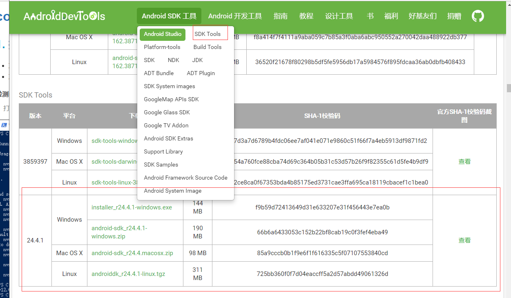
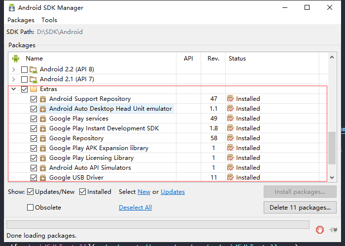

下载并安装 Android SDK (windows)
ps: 官网貌似要翻墙 ，以下流程基于上面第二地址
1. 找到 SDK Tools 下载对应的系统版本。

- 下载完成后解压或安装到对应的目录，注：尽量不要保存在中文路径下。
2. 在 SDK Tools 目录下找到 SDK Manager 双击打开
Tools 选择前三个就好

api 可以选最新，但是 cordova 运行或打包会提示需要 api 28 所以这里选了Android 9(API 28) SDK项(System Image 可选)---不知道是电脑版本原因还是cordova原因
亲测 Android Virtual Device (AVD) 即虚拟机，本电脑只能正常运行 Android 6.0(API 23) ,其它版本要么黑屏要么闪退（---听说不能运行8.0以上的版本，待测）

Extras 全选
选择完成后点击 Install Num Packages 进行下载 (成功安装后status值为Installed；失败/未安装为Not installed)。
3. packages下载可能会存在失败。可以尝试重新勾选下载（基本反复下载几次就好了...）。
若还是不行，可尝试以下方法
ps：本人未尝试过
采用有Android SDK在线更新镜像服务器来下载安装：
- 北京化工大学镜像服务器地址:
IPv4:ubuntu.buct.edu.cn/端口：80;
IPv4:ubuntu.buct.cn/端口：80;
IPv6:ubuntu.buct6.edu.cn/端口：80; - 大连东软信息学院镜像服务器地址:
mirrors.neusoft.edu.cn端口：80; - 郑州大学开源镜像站:
mirrors.zzu.edu.cn端口：80;
- 北京化工大学镜像服务器地址:
使用方法：
- 启动 Android SDK Manager ，打开主界面，依次选择『Tools』->『Options...』，弹出『Android SDK Manager - Settings』窗口。
- 在『Android SDK Manager - Settings』窗口中，在『HTTP Proxy Server』和『HTTP Proxy Port』输入框内填入上面镜像服务器地址(不包含http://，如下图)和端口；
- 并且选中『Force https://... sources to be fetched using http://...』复选框。设置完成后单击『Close』按钮关闭『Android SDK Manager - Settings』窗口返回到主界面；
- 依次选择『Packages』、『Reload』。
参考图：
4. 配置环境变量（与jdk环境变量配置相仿）
打开：我的电脑/计算机 —— 属性 —— 高级系统设置 —— 环境变量。
新建一个系统环境变量，变量名为
ANDROID_SDK_HOME，变量值为JDK的安装目录路径(ex:D:\SDK\Android)。在系统变量找到
Path变量-编辑，新建%ANDROID_SDK_HOME%\platform-tools和%ANDROID_SDK_HOME%\tools两个。ps: 若下面检测环境步骤失败，尝试将这两个值上移到首位（移到首位后可能会由可视化格式状态变为编辑文本状态）
5. 检测 android SDK 环境配置
打开命令行窗口，输入
adb。出现如下图所示内容则配置成功：

next -> Gradle 下载与配置;